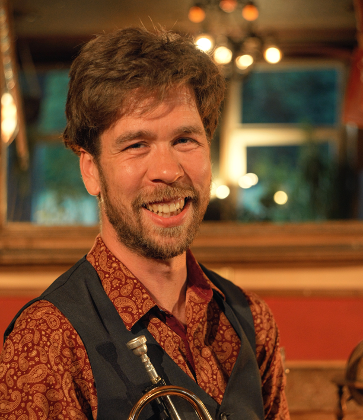
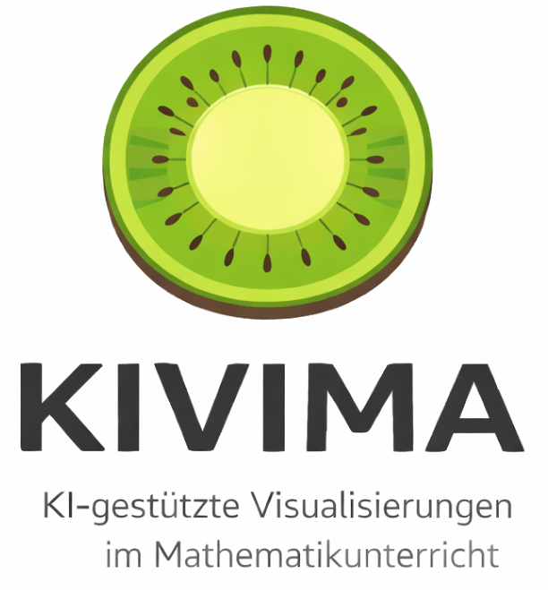

Math CaTS
Laufzeit: seit 2025
Chatbots als Tutor in Schulen (Bielefelder Nachwuchsfonds, Universität Bielefeld).

Dr. Valentin Katter
Ich bin Postdoc in der Mathematikdidaktik an der Universität Bielefeld und arbeite am Institut für Didaktik der Mathematik (IDM). In meiner Forschung beschäftige ich mich mit Stoffdidaktik und insbesondere mit Grundvorstellungen als zentralem Zugang dazu, wie Lernende mathematische Begriffe verstehen und entwickeln.
Ein besonderer Fokus meiner Arbeit liegt auf dem Einsatz von Künstlicher Intelligenz im Mathematikunterricht. Dabei untersuche ich, wie Large Language Models Lernprozesse unterstützen und neue Perspektiven auf mathematisches Modellieren eröffnen können.
Laufzeit: seit 2025
Chatbots als Tutor in Schulen (Bielefelder Nachwuchsfonds, Universität Bielefeld).
Laufzeit: seit 2024
Digitale Lernplattformen und KI-Tools in der Lehramtsausbildung.

Laufzeit: seit 2026
Qualitätsfonds für Lehre, Universität Bielefeld.
Laufzeit: 2024
International Network for Enactive Mathematics.
Laufzeit: 2023
Enactive Learning Environments in Mathematics.
Laufzeit: 2017–2022
DAAD-Kooperation mit Partnern in Chile.
Ausgewählte Workshops und Vorträge aus Fortbildungen, Tagungen und internationalen Kontexten.
| Jahr | Veranstaltung | Format / Thema |
|---|---|---|
| 2025 | BI.Mathe Lehrerfortbildungstag | Workshopthema: KI im Mathematikunterricht |
| 2025 | BI.Mathe Lehrerfortbildungstag | Workshopthema: Spielerisch Gespräche anregen |
| 2025 | Netzwerktagung Mathematik 2025 | Vortrag beim Niedersächsischen Landesinstitut für schulische Qualitätsentwicklung — Thema: KI aus Schülerperspektive |
| 2024 | MINT-Sommer (Uni Bielefeld) | Der Satz von Borsuk Ulam - warum es am anderen Ende der Welt auch regnet |
| 2024 | INEM (Universidad Católica del Norte - Antofagasta, Chile) | Grundvorstellungen de las funciones trigonométricas & exponentiales |
Alle gehaltenen Veranstaltungen an der Universität Bielefeld im eKVV ansehen
Haben Sie Interesse an Kooperationen, Vorträgen oder gemeinsamen Forschungsprojekten? Ich freue mich über Ihre Nachricht.
E-Mail: vkatter@uni-bielefeld.de